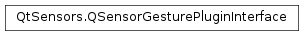

QSensorGesturePluginInterface¶
Detailed Description¶
The
PySide2.QtSensors.QSensorGesturePluginInterfaceclass is the pure virtual interface to sensor gesture plugins.The
PySide2.QtSensors.QSensorGesturePluginInterfaceclass is implemented in sensor gesture plugins to register sensor gesture recognizers withPySide2.QtSensors.QSensorGestureManager.See also
QtSensorGestures Plugins
-
class
PySide2.QtSensors.QSensorGesturePluginInterface¶ Construct the
PySide2.QtSensors.QSensorGesturePluginInterface.
-
PySide2.QtSensors.QSensorGesturePluginInterface.createRecognizers()¶ Return type: Called by the manager to create the recognizers. Plugins should initialize and register their recognizers using
QSensorGestureManager.registerSensorGestureRecognizer()here.
-
PySide2.QtSensors.QSensorGesturePluginInterface.name()¶ Return type: unicode Returns this plugins name.
-
PySide2.QtSensors.QSensorGesturePluginInterface.supportedIds()¶ Return type: list of strings Returns a list of the recognizer Id’s that this plugin supports.
© 2018 The Qt Company Ltd. Documentation contributions included herein are the copyrights of their respective owners. The documentation provided herein is licensed under the terms of the GNU Free Documentation License version 1.3 as published by the Free Software Foundation. Qt and respective logos are trademarks of The Qt Company Ltd. in Finland and/or other countries worldwide. All other trademarks are property of their respective owners.